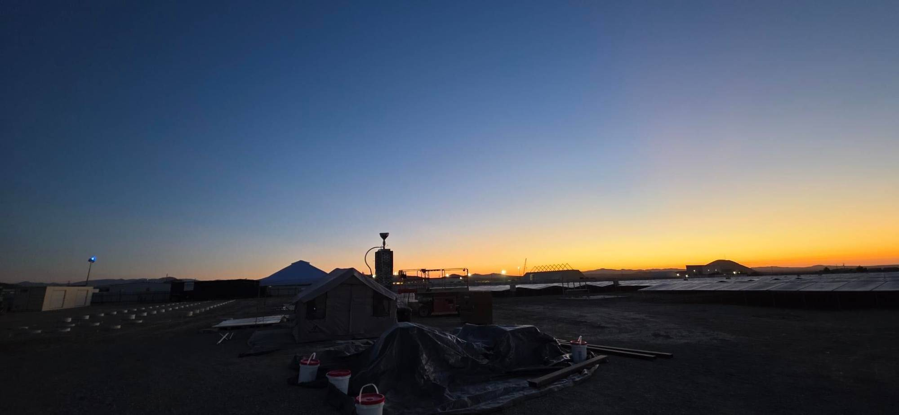
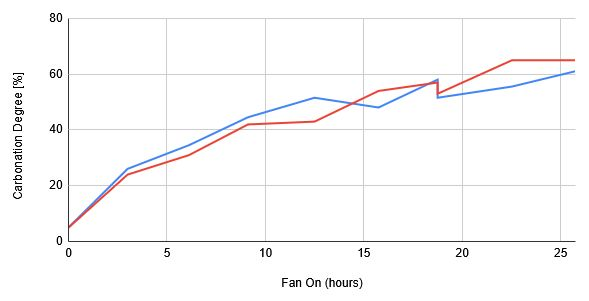
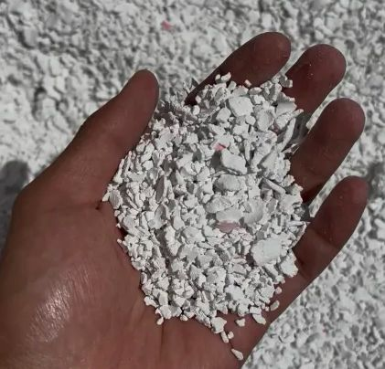
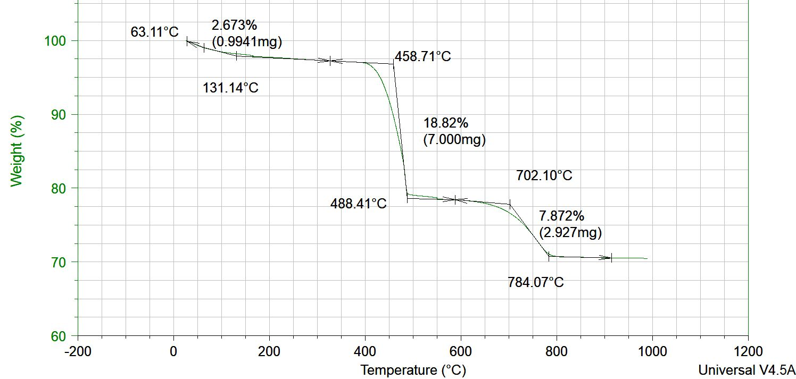
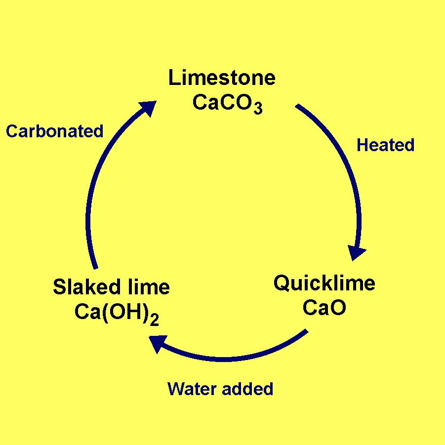

I worked at Terraform Industries on the direct air capture team. Calcium hydroxide pulls CO₂ out of the air in a carbonation reactor, and a calciner then heats it to release a concentrated CO₂ stream. I built and tested hardware for both parts of that cycle.
The carbonator is the reactor that captures CO₂ from ambient air by reacting it with calcium hydroxide to form calcium carbonate (Ca(OH)₂ + CO₂ → CaCO₃ + H₂O). AK led our team, known as “the Dawgs”, in this design effort, and I was responsible for designing the reactor's structural base and outlet.
The main challenge was the uneven flow of the sorbent flakes. Rather than draining material only from the center, as a traditional hopper would, the outlet needed to meter it out of the carbonator evenly. The outlet I designed achieved this.
I also helped assemble the reactor, which took only 10 man-hours in total.
After building the reactor and filling it with sorbent flakes, I conducted a test campaign to measure its performance in CO₂ captured per day. I collected samples at different points during testing and analyzed them using a thermogravimetric analyzer (TGA), which measures mass loss during heating to help determine the material’s composition.
A “diminishing returns” effect was observed during this test, and the carbonation vs time graph helps inform the ideal residency time of the sorbent.




The calciner is the reactor that receives the carbonated sorbent and thermally decomposes the calcium carbonate at 1,000 °C to release CO₂, which can then be used to synthesize hydrocarbons. During development, I built two prototypes for the gas offtake system, designed the steel frame, designed the insulation system, and performed material thermal testing.
Our team took this reactor to the Mojave Desert, a test of our hardware design in harsh conditions. After a week of assembly, troubleshooting, and testing, Terraform became the first company to produce CO₂ entirely off-grid and operate a solar-powered calciner. During this test campaign, CO₂ was produced at 99% purity.
I also drove a forklift :D
Terraform CEO Casey Handmer's post about this deployment on X.
Shout-out to my manager, Stephanie, for leading the calciner effort.